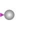
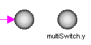

BooleanValueShow Boolean value from numberPort or from number input field in diagram layer dynamically |

|
Information
This information is part of the Modelica Standard Library maintained by the Modelica Association.
This block visualizes a Boolean variable in a diagram animation. The Boolean variable to be visualized can be defined in the following ways:
- If useActivePort = true (which is the default), a Boolean input is present and this input variable is shown.
- If useActivePort = false no input connector is present. Instead, a Boolean input field is activated in the parameter menu and the Boolean expression from this input menu is shown.
If the Boolean variable is false the block is "grey", otherwise, it is "green". The two versions of the block are shown in the following image (in the right variant, the name of the variable value that is displayed is also shown below the icon):

The usage is demonstrated, e.g., in example Modelica.Blocks.Examples.BooleanNetwork1.
Parameters (1)
| use_activePort |
Value: true Type: Boolean Description: = true, if activePort enabled |
|---|
Inputs (1)
| active |
Default Value: false Type: Boolean Description: Boolean variable to visualize if use_activePort=false (time varying) |
|---|
Connectors (2)
| activePort |
Type: BooleanInput Description: Boolean variable to be shown in diagram layer if use_activePort = true |
|
|---|---|---|
| showActive |
Type: BooleanOutput |
Used in Examples (2)
|
Modelica.Blocks.Examples Demonstrates the usage of blocks from Modelica.Blocks.MathBoolean |
|
|
Modelica.Blocks.Examples Demonstrates the usage of blocks from Modelica.Blocks.Interaction.Show |